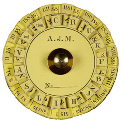
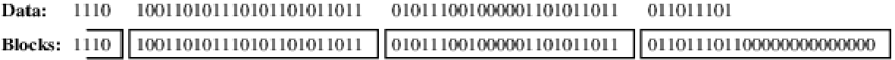
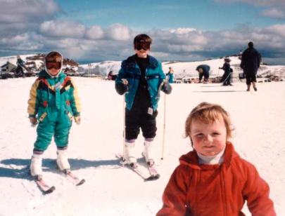

DADA2026:4-1
Defence against the Dark Arts
Fourth topic - Cryptography 1 [H4]
Keys and confusion...

Outline
- Prehistory of crypto
- Terms, definitions, goals
- Symmetric cipher building blocks
- DES and AES
Encryption...
Outline
- Prehistory of crypto
- Terms, definitions, goals
- Symmetric cipher building blocks
- DES and AES
Julius Cæsar cipher...[1]

| I C L A V D I V S | |||||||||||||||||||||||||
| A B C D E F G H I K L M N O P Q R S T V X Y Z | |||||||||||||||||||||||||
| X Y Z A B C D E F G H I K L M N O P Q R S T V | |||||||||||||||||||||||||
| F Z H X R A F R P |
{\begin{array}{ccccc} c & = & \mathrm{Enc}_{k}(p) & = & (p+k)\mod 23\\ p & = & \mathrm{Dec}_{k}(c) & = & (c-k)\mod 23 \end{array}}
Cryptanalysis: we only have 22 useful ciphers. We can brute force it!
Examples of rotation ciphers


Used in the American Civil war, they can be used as simple rotation cipher. The Confederate one has a keyspace of 26, and a useful keyspace of only 25.
Cryptanalysis of mono-alphabetic ciphers

The central concept of this was discovered and described by Arabian scientists in the 9th century. An attacker can calculate the frequencies for ciphertext. The most common might be an E.
Enigma: polyalphabetic substitution cipher machine[3,4,5,8,6]
 |  |
 |  |
Product ciphers

Is double encryption a thing? i.e. c=\mathrm{Enc}_{k_{1}}(\mathrm{Enc}_{k_{2}}^{'}(x)) where k_{1} is the key for the first encryption \mathrm{Enc} and k_{2} is the key for the second encryption \mathrm{Enc}^{'}.
- If both \mathrm{Enc} and \mathrm{Enc}^{'} are permutation ciphers, then there is no advantage of doing so. The combined cipher is still a permutation.
- If \mathrm{Enc} and \mathrm{Enc}^{'} are both substitution ciphers, then the final encryption is simply another substitution cipher.
But doing permutation and sustitution form an important class of ciphers: the Substitution-Permutation Networks (SPN). A bridge from classical to modern ciphers.
Lest we forget: The one-time-pad (Vernam's cipher)[i3]
|
The one time pad provides “perfect” secrecy, meaning you learn nothing by having the ciphertext. The key is a sequence of random key letters, each letter used once only, and available at only the sender and receiver. Even in modern times, there are mysterious number stations [i3], broadcasting sequences of letters or numbers. Many of the stations have been located, typically behind barbed wire and military signs. As far as I am aware, no government has ever admitted to their purpose. However, it is pretty clear that they are using Vernam's cipher to broadcast messages to spies in other countries. Only the spy and the spy-handler have copies of the “book”. |

Q: Why dont we use Vernam's cipher for everything if it is perfect?
Outline
- Prehistory of crypto
- Terms, definitions, goals
- Symmetric cipher building blocks
- DES and AES
Modern symmetric ciphers
Outline
- Prehistory of crypto
- Terms, definitions, goals
- Symmetric cipher building blocks
- DES and AES
Confusion and diffusion (Shannon)[ctrl-i2]
  |
Shannon's important paper in 1949 gave a formal treatment of secrecy, introducing multiple concepts related to cryptography. Confusion and diffusion are two terms that have a specific meaning in the paper, identifying properties that must be preserved to frustrate statistically based cryptanalysis. Confusion: key and ciphertext. Diffusion: plaintext and ciphertext. |
Block cipher concepts
One technique is to add a single 1 bit, followed by enough 0 bits to fill out the block (if it ends on a block boundary, a whole padding block will be added).

The IV does not need to be secret, but should be unpredictable, and not reused with the same key. A (previously) common practice of re-using the last ciphertext block of a message as the IV for the next message is insecure.

Avalanche - A “goodness” measure for crypto

Assume we had a crypto system, and two plaintext messages p, and p' with only one bit different. As the encryption process does each round, we want it to quickly have many bits different.



Outline
- Prehistory of crypto
- Terms, definitions, goals
- Symmetric cipher building blocks
- DES and AES
DES considered harmful[i4]

56-bit keys have 2^{56}=7.2\times10^{16} values. A brute force search looks like it might be hard, but consider the speedup in computers from the 1970s onwards. In 1997 using a network of computers on the Internet, it took a few months. In 1998, on dedicated h/w (EFF), it took a few days. In 1999, 22hrs (and so on). How long does it take now? We must consider alternatives to DES: 2DES?
The problem with 2DES

Starts with the attacker having a plaintext, ciphertext pair \left\langle p,c\right\rangle . The attacker computes two tables: E(k,p) for each of the 2^{56} keys, and D(k,c) for each of the 2^{56} keys. For each match in the two tables, you have found a possible key, with only 2^{57} DES operations (ie - not 2^{112}).

AES operations: 10/12/14 rounds
| |

byte substitution: one S-box used on every byte
shift rows: permute bytes between groups/columns
mix columns: substitutions using matrix multiply of groups
add round key: XOR state with key material
Summary: Crypto-1
History - We looked at symmetric cryptography through a historical lens, seeing the weaknesses of early ciphers. These ciphers used either substitutions, or permutations, and had a range of weaknesses depending on the type of cipher.
Frequency Analysis - We saw how frequency analysis could be used to attack mono-alphabetic ciphers. This led to the development of poly-alphabetic ciphers, where we saw the first machines for encrypting messages in this way.
Computer Cryptography - In the last part we looked at how modern symmetric ciphers use a combination of substitutions and permutations to avoid cryptanalysis. We looked at DES and AES.